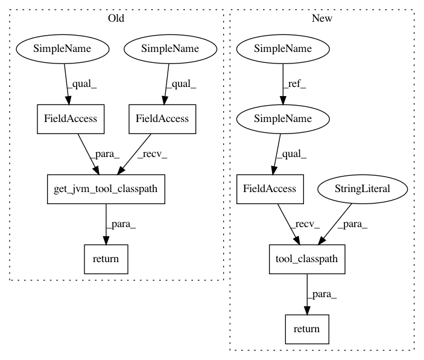

1dda3a05a832569ea6a5ed9ff5056947ab181b99,src/python/pants/backend/jvm/tasks/jvm_compile/scala/zinc_utils.py,ZincUtils,_zinc_classpath,#ZincUtils#,82
Before Change
@property
def _zinc_classpath(self):
return self._jvm_tool_bootstrapper.get_jvm_tool_classpath(self._zinc_bootstrap_key)
@property
def _compiler_classpath(self):
return self._jvm_tool_bootstrapper.get_jvm_tool_classpath(self._compile_bootstrap_key)
After Change
self._log_level = log_level
@property
def _zinc_classpath(self):
return self._nailgun_task.tool_classpath("zinc")
@property
def _compiler_classpath(self):
return self._nailgun_task.tool_classpath("scalac")
In pattern: SUPERPATTERN
Frequency: 3
Non-data size: 7
Instances
Project Name: pantsbuild/pants
Commit Name: 1dda3a05a832569ea6a5ed9ff5056947ab181b99
Time: 2014-12-19
Author: benjyw@gmail.com
File Name: src/python/pants/backend/jvm/tasks/jvm_compile/scala/zinc_utils.py
Class Name: ZincUtils
Method Name: _zinc_classpath
Project Name: pantsbuild/pants
Commit Name: 1dda3a05a832569ea6a5ed9ff5056947ab181b99
Time: 2014-12-19
Author: benjyw@gmail.com
File Name: src/python/pants/backend/jvm/tasks/jvm_compile/scala/zinc_utils.py
Class Name: ZincUtils
Method Name: _compiler_classpath
Project Name: pantsbuild/pants
Commit Name: 1dda3a05a832569ea6a5ed9ff5056947ab181b99
Time: 2014-12-19
Author: benjyw@gmail.com
File Name: src/python/pants/backend/jvm/tasks/jvm_compile/scala/zinc_utils.py
Class Name: ZincUtils
Method Name: _plugin_jars